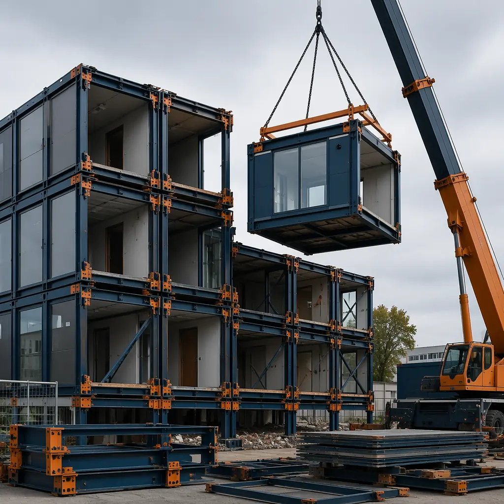
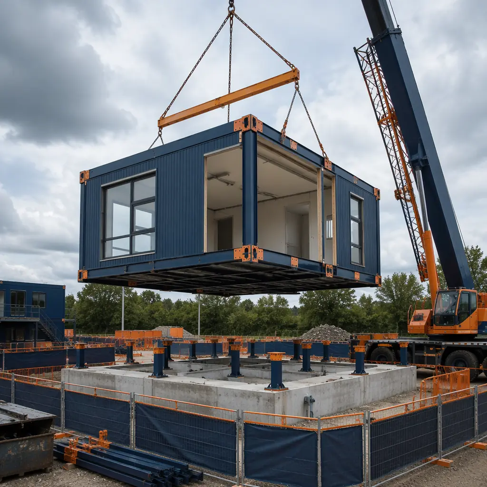
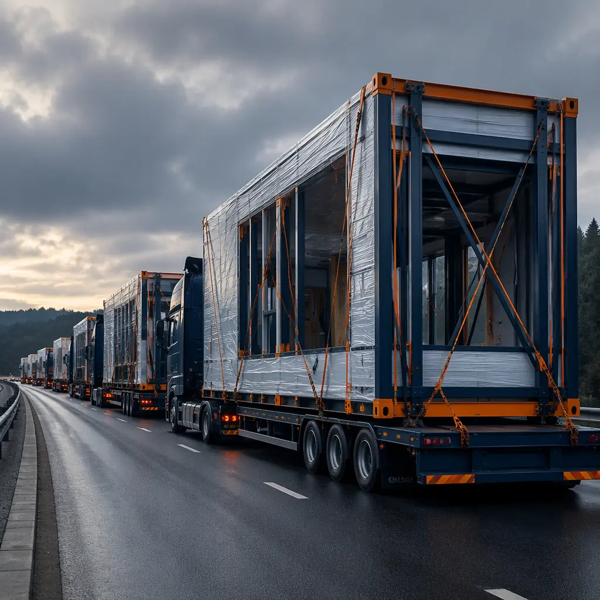
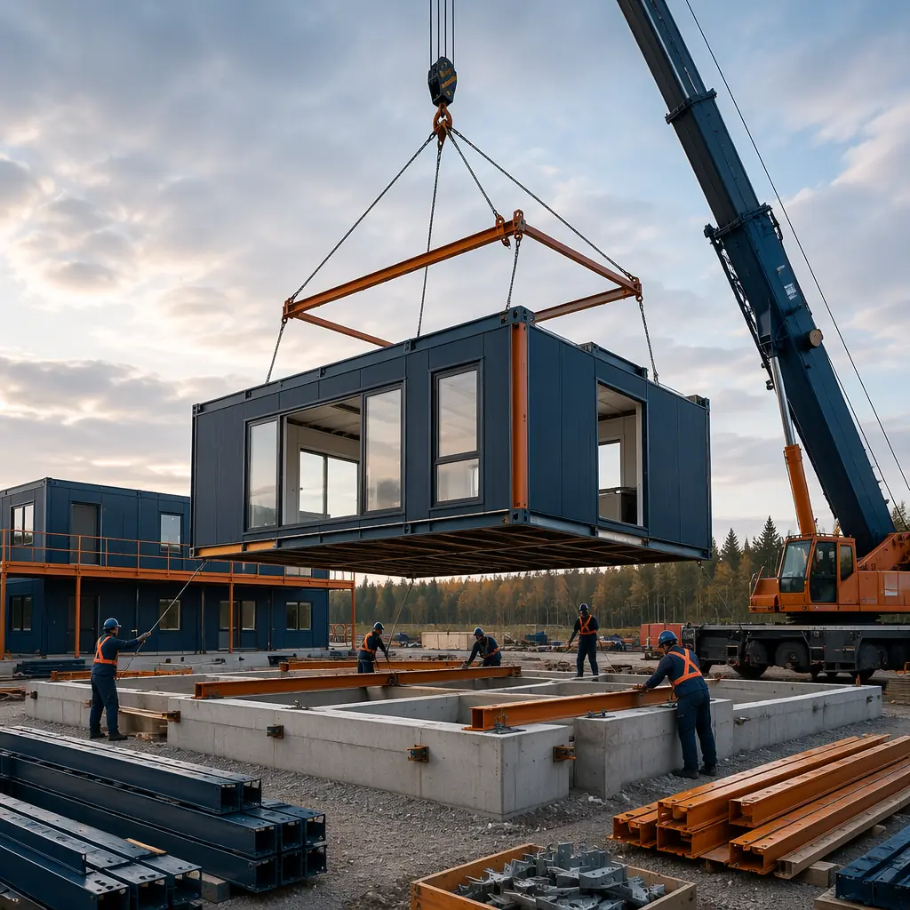
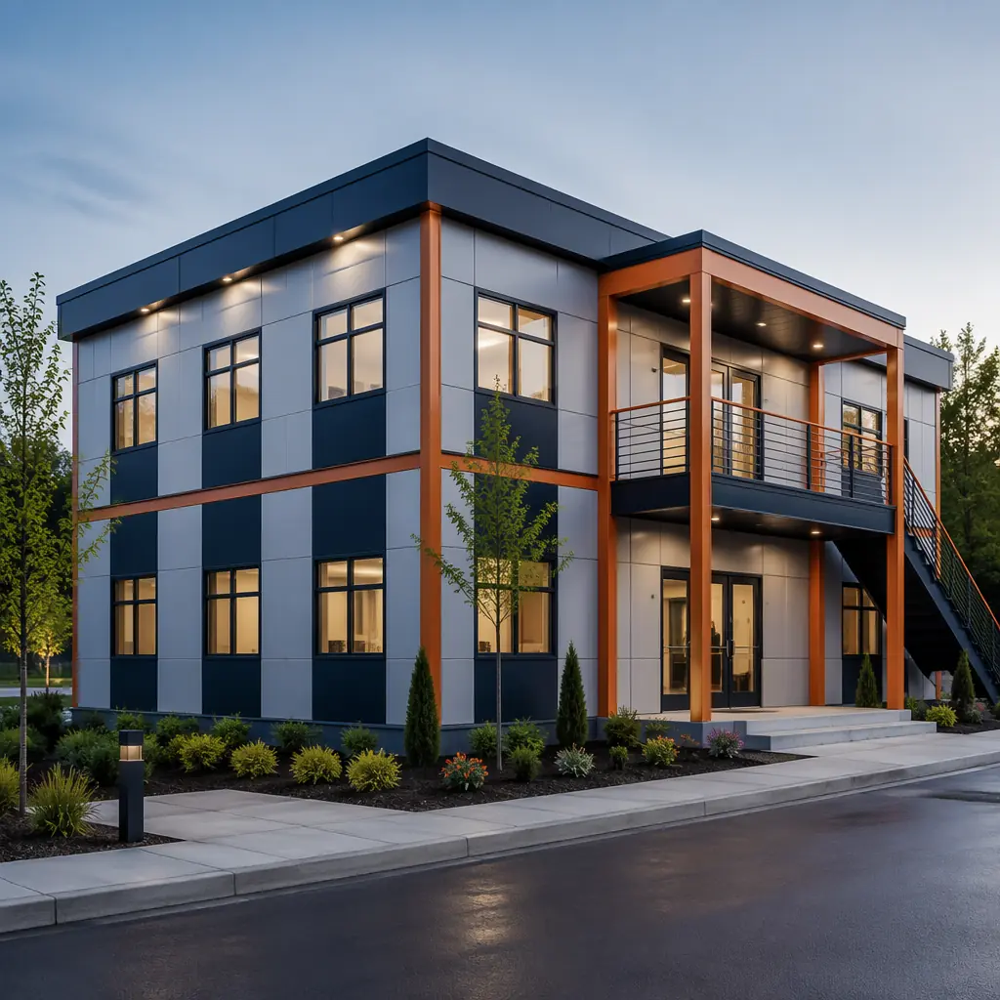

One of the least-discussed but most financially significant properties of modular construction is that the building is not permanently anchored to its first site. Unlike a traditional stick-built or masonry structure — which can only leave its foundation through demolition — a modular steel-framed building can be disassembled into its constituent modules, transported to a new location, and reinstalled on a new foundation with minimal loss of structural integrity. This capability transforms the asset from an immovable fixture into a relocatable capital investment, and it changes the financial calculus for organizations that face uncertain site tenure, portfolio consolidation, or expansion into new markets. This guide covers the entire relocation lifecycle: feasibility assessment, disassembly planning, transportation logistics, foundation preparation at the new site, module reconnection, systems recommissioning, and cost estimation with real project data.

When Relocation Makes Financial Sense — vs Building New
Relocating a modular building is not always cheaper than building new. The breakeven point depends on the distance between sites, the size and configuration of the building, the condition of the modules, and the cost of foundation and site work at the new location. Based on MODURA's experience with relocation projects, here is a practical decision framework:
- Short-distance relocation (<100 miles). Moving a building within the same metropolitan area or region typically costs 30–50% of the replacement cost for the same building constructed new. A 10,000 sq ft modular office with a replacement cost of $1.6 million can be relocated 50 miles for approximately $480,000–$800,000. The savings are driven by the fact that the modules are already built, finished, and commissioned — the relocation cost is predominantly crane time, transportation, and site preparation, not construction labor or materials.
- Medium-distance relocation (100–500 miles). Transportation costs increase linearly with distance (approximately $8–$12 per loaded mile per truck, with 2–4 modules per truck depending on module size). At 300 miles, transportation adds $120,000–$180,000 for a 20-module building. Total relocation cost rises to 50–70% of replacement cost, and the financial case depends heavily on the condition of the modules. If the building is less than 10 years old and in good condition, relocation still wins. If significant renovation is required, building new at the destination may be more cost-effective.
- Long-distance relocation (500+ miles). Transportation costs can exceed 70% of replacement cost, and the risks of transit damage increase. At this distance, relocation is typically justified only when the modules have unique features that would be expensive to replicate — specialized laboratory infrastructure, cleanroom environments, or custom architectural elements — or when the relocation timeline is significantly shorter than building new, generating operational savings that offset the higher relocation cost.
The financial case for relocation is strongest for buildings that are under 15 years old, steel-framed (for structural integrity through multiple crane lifts), and designed with design for disassembly principles that facilitate module separation. Buildings that were not originally designed for disassembly can still be relocated, but the process is more labor-intensive and carries a higher risk of finish damage at the module joints.

The Relocation Process — Six Phases From Existing Site to Operational New Site
Phase 1: Feasibility Assessment and Structural Survey
Before committing to relocation, a structural engineer must assess the building's suitability for disassembly and transport. The assessment covers four areas:
- Module connection type. Modules connected with bolted steel plates are designed for potential disassembly. Modules connected with welded joints or cast-in-place concrete connections require cutting, which adds cost and may compromise the module's structural frame. The original construction drawings should specify the connection type; if they are unavailable, a limited invasive inspection at representative connection points is necessary.
- Structural frame condition. The steel frame of each module must be inspected for corrosion, deformation, or fatigue. Modules that have been exposed to coastal environments, industrial chemicals, or freeze-thaw cycles for extended periods may have hidden corrosion at connection points. A visual inspection augmented with ultrasonic thickness testing at critical load-bearing elements provides the data needed to determine whether each module can safely withstand the disassembly lift, transport, and reinstallation lift.
- Module interior condition. The cost of repairing drywall cracks, trim separation, and finish damage that occurs during disassembly must be factored into the relocation budget. As a rule of thumb, expect finish repairs costing 3–5% of the replacement value of the finishes for a well-executed relocation, rising to 8–12% if the building was not designed for disassembly.
- Regulatory compatibility. The building's original design may not comply with the current building code at the new site — particularly for seismic design category, wind load, snow load, and energy code requirements. Our seismic design analysis and energy efficiency guide cover the technical standards. If the new site imposes stricter requirements, the cost of retrofitting modules to comply must be included in the relocation budget — and if the retrofit cost is substantial, building new may be the better financial decision.
Phase 2: Utility Disconnection and Site Preparation at Origin
Before modules can be lifted, all utilities must be disconnected and capped at the module interface, not at the site utility connection. This means the electrical service is disconnected at each module's subpanel (with the subpanel remaining in the module), plumbing is capped at the module riser connections, and HVAC ductwork is sealed at the module boundaries. The goal is to preserve as much of the factory-installed MEP infrastructure as possible. Detailed MEP system documentation — covered in our MEP integration guide — is essential for planning the disconnection sequence and ensuring that nothing critical is severed.
The existing foundation is typically abandoned or demolished. Modular buildings sit on pier foundations, grade beams, or a combination; the foundation is not relocated with the modules. The cost of foundation demolition and site restoration at the origin site is part of the relocation budget and should not be overlooked — budget $15–$25 per square foot of building footprint for foundation removal and rough grading.
Phase 3: Module Disassembly and Lift Sequence
The disassembly sequence is the reverse of the original installation sequence, but it requires more care because the module finishes are now 5–15 years old and less tolerant of movement. Key considerations include:
- Lift sequence planning. Upper-floor modules must be removed before lower-floor modules. The crane must have sufficient capacity at the required radius to lift the heaviest module, and the lift plan must account for any structural modifications made since installation (rooftop equipment, additions, modifications).
- Connection release procedure. Each bolted connection should be loosened in a specific sequence to prevent uneven stress on the module frame. The structural engineer should specify the bolt release sequence for each connection type, and the crane should be pre-tensioned to take the module's weight before the final bolts are removed.
- Module protection during lift. Modules should be lifted using the original lifting points if they are accessible and structurally sound. If the original lifting points have been concealed by finishes or are no longer accessible, spreader bars and lifting straps rated for the module weight are an acceptable alternative, but they must be positioned to avoid crushing roof edges or wall panels. Protective corner guards and edge protection are a small investment — typically $500–$1,000 per module — that prevents thousands of dollars in finish repairs.

Phase 4: Transportation and Route Planning
Modular building modules are oversized loads. A typical commercial module measures 12–16 feet wide, 40–70 feet long, and 10–12 feet high, with a weight of 15,000–35,000 pounds. These dimensions exceed standard highway limits in most jurisdictions, requiring:
- Oversize/overweight permits. Each state or province along the route requires a separate permit. Permit processing typically takes 2–4 weeks, and the permitted route may not be the shortest route — it is the route with bridges rated for the load, overpasses with sufficient clearance, and roads wide enough for the load. This is covered in detail in our transportation logistics guide.
- Escort vehicles. Most jurisdictions require pilot cars (front escort) and, for wider loads, chase cars (rear escort). Budget $2–$4 per loaded mile for escort services.
- Utility coordination. Routes with low-hanging power lines, traffic signals, or overhead signs may require temporary utility relocation or manual line lifting by the local utility company. Utility coordination adds 1–3 weeks to the transportation timeline and should be initiated as early as possible — ideally 8–10 weeks before the planned move date.
- Module securing and weather protection. Modules must be secured to the trailer with rated tie-downs at all lifting points, and the open faces of modules (where they were connected to adjacent modules) must be weatherproofed with temporary sheathing. Water intrusion during transit can cause mold and finish damage that may not be visible until after reinstallation.
Phase 5: Foundation and Site Preparation at Destination
The new site requires the same foundation preparation as any modular project, covered comprehensively in our foundation systems guide. The critical difference for relocation projects is that the foundation must match the existing module layout precisely — the module connection points are fixed by the original building design and cannot be adjusted to accommodate a modified foundation. A dimensional survey of the existing building, capturing the exact location of every pier, anchor bolt, and module corner, must be completed before the modules are lifted from the original foundation. This survey data drives the foundation design at the new site.
Site utilities at the destination must be stubbed to match the module connection points. If the original building had utilities entering from the north, and the new site routes utilities from the south, the utility connections within the modules may need to be extended — or the site utilities must be routed around the building perimeter. The latter is usually less expensive but requires more site work.
Phase 6: Module Reinstallation and Systems Recommissioning
Reinstallation follows the same sequence as new modular installation but with two additional complexities:
- Module fit-up tolerance. Modules that were fabricated together in the factory and originally installed together on the same foundation have a known fit-up relationship. When those same modules are reinstalled on a new foundation, the accumulated tolerances of the new foundation, plus any slight deformation from transport, can create fit-up gaps at the module joints that did not exist in the original installation. The structural engineer should specify acceptable gap tolerances and the remediation method (shimming, adjustable connections, or joint filler) before modules arrive on site.
- Systems recommissioning. Every MEP system must be recommissioned as if it were a new installation, because the connections were broken and remade. The commissioning protocol described in our commissioning and handover guide applies fully to relocated buildings, with one addition: the pressure test and electrical continuity results from the original commissioning should be compared to the reconnection results as a quality check. A significant deviation from the original values suggests a connection problem, not a system defect.
The recommissioning process should also include a building envelope integrity test, because the weather barrier at the module joints was broken during disassembly and must be re-established at the new site. Water spray testing at every external module joint — covered in our envelope systems guide — is the minimum verification standard.
| Relocation Phase | Duration (20-module building) | Cost Range | Key Risk |
|---|---|---|---|
| Feasibility assessment | 3–4 weeks | $15,000–$30,000 | Hidden structural deterioration |
| Utility disconnect + site prep (origin) | 1–2 weeks | $20,000–$40,000 | Utility severance damage to modules |
| Module disassembly + crane lifts | 1–2 weeks | $70,000–$130,000 | Module damage during lift |
| Transportation (100 miles) | 2–5 days | $50,000–$90,000 | Transit damage, permit delays |
| Foundation + site prep (destination) | 3–4 weeks | $60,000–$120,000 | Foundation/module dimensional mismatch |
| Reinstallation + recommissioning | 3–4 weeks | $90,000–$160,000 | Module fit-up gaps, MEP joint failures |
| Total (20-module, 100-mile relocation) | 10–16 weeks | $305,000–$570,000 | — |

When Relocation Beats Demolition — The Sustainability and Financial Case
A modular building that is demolished rather than relocated represents not just a financial loss but an embodied carbon loss that contradicts the sustainability commitments that many organizations now make. A typical 20,000 sq ft modular building contains approximately 150–200 metric tons of embodied CO2 in its steel frame, concrete floor decks, and manufactured finishes — roughly equivalent to 35–45 passenger vehicles driven for a year. Relocating the building preserves that embodied carbon, avoiding the emissions associated with demolition, disposal, and new material production.
For organizations pursuing LEED certification or carbon neutrality commitments, building relocation can contribute to Materials and Resources credits (Building Life-Cycle Impact Reduction) and Innovation credits. The carbon benefit is real and quantifiable: a lifecycle carbon analysis typically shows that relocation reduces the project's upfront carbon footprint by 60–80% compared to demolition and new construction on the same site.
The most sustainable building is the one that already exists. Modular construction is uniquely capable of delivering on that principle — because the building can be moved, not demolished. For organizations with a 10-year carbon reduction target, a relocation strategy for modular assets can be the single largest contributor to Scope 3 emissions reduction outside of operational energy efficiency.
Contingency Planning — What Goes Wrong and How to Budget for It
Relocation projects carry risks that new construction projects do not, and the contingency budget should reflect that. Based on MODURA's relocation project data, the most common cost overruns are:
- Hidden module damage discovered during disassembly (15–20% probability). Water intrusion at module joints, concealed behind interior finishes, may not be visible until the modules are separated. Budget a 10% contingency on the disassembly and finish repair line items.
- Permit delays (30–40% probability). Oversize load permits are issued by state and local agencies with varying processing timelines. A single jurisdiction's delay can hold up the entire transportation schedule. Budget 2–3 weeks of schedule float and confirm permit timelines 8 weeks before the planned move.
- Foundation rework at destination (10–15% probability). Even with precise dimensional surveys, foundation tolerances at the new site may not match the module footprint exactly. Budget $15,000–$25,000 for field adjustments to piers and anchor bolt positions.
- MEP recommissioning failures (20–25% probability). A connection that held pressure in the original installation may not hold after disconnection, transport, and reconnection. Budget 2–3 additional days of commissioning agent time beyond the planned recommissioning schedule.
For a typical $400,000 relocation project, a contingency of 15–20% ($60,000–$80,000) is appropriate — higher than the 5–10% contingency typical for new modular construction, reflecting the additional unknowns of working with an existing asset.
